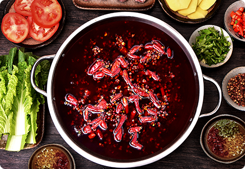

开火锅烧烤食材超市前都需要注意哪些方面？
来源：辣圈时间：2020-5-25浏览：300次
不得不说，中国是一个美食大国，无论在哪，美食都是最能牵动人心的。
现在对于大多数人来说， 火锅就是最能够牵动人心的。近年来，火锅食材
超市异军突起，直接席卷了餐饮市场。许多创业者都想尝试，但是，这并不
容易。在选择加盟过程中，需要了解火锅食材超市品牌排名，应该如何判别呢

考察品牌实力：有实力才有未来，有实力才值得选择，但是考察的时间
如此之短，我们又该怎么摸清公司的实力呢？首先得试试味道，毕竟味道
是实力的具体体现，其次要了解品牌的规模，员工有多少，部门的设置是
否合理完善，以及后期的食材运送模式是怎样的，公司的运转机制又如何
等等，能在这些方面尽善尽美的品牌实力自然不会差。考察品牌扶持力度
除了好的信誉和实力外，对于加盟商来说，还有一点很重要，那就是品牌
的扶持力度。开一家火锅食材超市加盟店就像培养一颗小树苗，需要你耐
心地浇水、施肥，你给予的关爱越多，才能长得越好。由此可见，品牌的
扶持力度越大，火锅食材超市也就发展得更好。所以建议，在考察时详细
了解一下公司的扶持都涵盖哪些方面，扶持的力度是否能达到帮助小白开
店的标准 .考察品牌信誉：好的品牌信誉是加盟的前提，这里的信誉指的
不仅仅是在市面上的信誉度以及口碑，还包括与加盟商的合作是否诚实守
信，试想如果你加盟到一个光说不做，后期没有保障的品牌，后续的经营
必然会面临巨大的问题，因此在考察品牌时一定要考核品牌在市场上的信
誉度如何，避免加盟到信誉度不高的品牌。火锅烧烤食材超市加盟的发展
与壮大，让无数人看到了商机，但是这其中却有很多细节和问题值得深究
在考察火锅食材超市品牌排行的时候一定要仔细地到市面上考察了解，保
持理智，切不要盲目跟风，毕竟适合自己的才是更好的。我们在选择时也
应该注意企业的文化，一个好的品牌必然会有一个好的企业价值观，它是
引领加盟商向前的明灯。以上关于火锅食材超市品牌排行如何评判的相关
介绍，希望能够对各位创业者有所帮助。